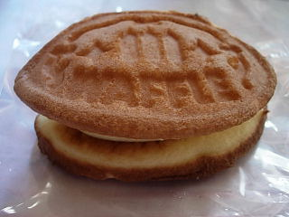

ドレスデンのワッフル
2008/10/17
ふっくらとしていて大きいサイズのワッフルでした。

クリームが沢山入っていたので、甘くて重いかなと思ったんですが、クリーム味が案外あっさりとしていて軽かったです。
クリーム味が濃くなかったおかげで、ワッフル生地の味もちゃんと味わえました。
島根県出雲市天神町513-6
閉店しました。
2008/10/17
ふっくらとしていて大きいサイズのワッフルでした。

クリームが沢山入っていたので、甘くて重いかなと思ったんですが、クリーム味が案外あっさりとしていて軽かったです。
クリーム味が濃くなかったおかげで、ワッフル生地の味もちゃんと味わえました。
2007/01/13
今日お店の前を通ったら、「白くまくん」と「オレンジケーキ」が半額だったので買って帰りました。
新鮮じゃないですけど、半額ってなってるとお買い得感が勝って欲しくなりました。
ケーキ屋さんで、おつとめ品がある所ってあまりないですよね。
白くまくんは、こんもりとした山形の苺ショートでした。普通の苺ショートよりもこっちの方が見た目がちょっと可愛いですね。
ふんわりした山形のスポンジの中に苺が入ってるんですが、カットされた苺が美味しそうに見えるんですよね。
オレンジケーキは、オレンジの味もしっかりあり、しっとりしてて甘かったです。ちょっと濃い味でした。